<!DOCTYPE html>
<html lang="zh-TW">
<head>
    <meta charset="UTF-8">
    <meta name="viewport" content="width=device-width, initial-scale=1.0, minimum-scale=1.0, maximum-scale=1.0">
    <meta name="keywords" content="Horace Chuang, 作品集, UI/UX, 網頁設計, 介面設計, 使用者經驗">
    <meta name="description" content="The Selected Work of Horace Chuang.">
    <title>蔡健雅 列穆尼亞演唱會 互動視覺 - Horace Chuang | Selected Work Portfolio</title>
    <!-- Load CSS -->
    <link rel="preconnect" href="https://fonts.googleapis.com">
    <link rel="preconnect" href="https://fonts.gstatic.com" crossorigin>
    <link href="https://fonts.googleapis.com/css2?family=Karla:wght@200;400;600&family=Noto+Sans+TC:wght@100;300;500;700&display=swap" rel="stylesheet">
    <link rel="stylesheet" href="https://cdnjs.cloudflare.com/ajax/libs/animate.css/4.0.0/animate.min.css">
    <link rel="stylesheet" href="../css/general.css">
    <link rel="stylesheet" href="../css/project/project6.css">
    <link rel="stylesheet" href="../css/aos.css">
    <link rel="apple-touch-icon" sizes="180x180" href="../img/favicon/apple-touch-icon.png">
    <link rel="icon" type="image/png" sizes="32x32" href="../img/favicon/favicon-32x32.png">
    <link rel="icon" type="image/png" sizes="16x16" href="../img/favicon/favicon-16x16.png">
    <link rel="manifest" href="../img/favicon/site.webmanifest">
    <!-- Load JS File-->
    <script src="https://code.jquery.com/jquery-3.5.1.min.js"></script>
    <script src="https://kit.fontawesome.com/2518fecbd4.js" crossorigin="anonymous"></script>
    <script async src="https://www.googletagmanager.com/gtag/js?id=G-2M9P28SF1T"></script>
    <script src="../js/aos.js"></script>
    <script src="../js/navMenu_mobile.js"></script>
    <script src="../js/hideMenu.js"></script>
    <script src="../js/scrollPosition.js"></script>
    <script src="../js/smooth-scroll.polyfills.min.js"></script>
    <script type="text/javascript">
        (function(c,l,a,r,i,t,y){
            c[a]=c[a]||function(){(c[a].q=c[a].q||[]).push(arguments)};
            t=l.createElement(r);t.async=1;t.src="https://www.clarity.ms/tag/"+i;
            y=l.getElementsByTagName(r)[0];y.parentNode.insertBefore(t,y);
        })(window, document, "clarity", "script", "j0zs9a9sh9");
    </script>
    <!-- Disable Cache -->
    <meta http-equiv="pragma" content="no-cache">
    <meta http-equiv="Cache-Control" content="no-cache, must-revalidate">
    <meta http-equiv="expires" content="0">
</head>
<body class>
    <div id="wrapper">
        <nav id="nav">
            <div class="nav-container" data-aos="fade-down" data-aos-duration="500">
                <div class="nav-column">
                    <div class="logo" data-aos="fade-down" data-aos-duration="1500" data-aos-delay="250">
                        <a href="../">
                            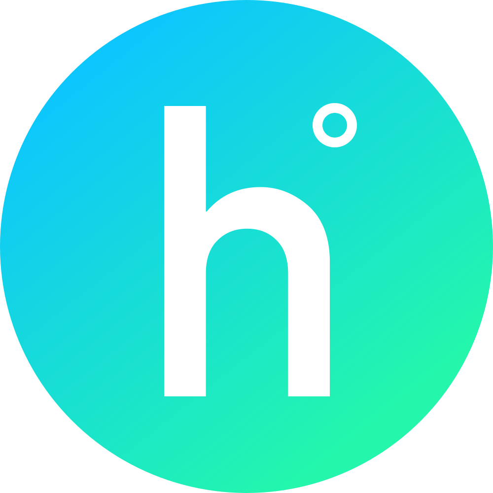
                        </a>
                    </div>
                    <div class="nav-btn" data-aos="fade-down" data-aos-duration="1500" data-aos-delay="250">
                        <ul>
                            <li></li>
                            <li></li>
                            <li></li>
                        </ul>
                    </div>
                </div>
                <div class="nav-item">
                    <div class="line">
                        <div class="container"></div>
                    </div>
                    <ul class="container" data-aos="fade-down" data-aos-duration="1500">
                        <li><a data-scroll href="../#project">作品 | Project</a></li>
                        <li><a data-scroll href="../#about">關於 | About</a></li>
                        <li><a href="https://www.cakeresume.com/horacechuang" target="_blank">履歷 | Résumé</a></li>
                        <li><a href="mailto:mail@horace.design">Mail Me <i class="fas fa-paper-plane"></i></a></li>
                    </ul>
                </div>
            </div>
        </nav>
        <!-- <div id="line">
            <div class="container"></div>
        </div> -->
        <header id="header">
            <section id="project-header-container">
                <header class="project-header">
                    
                    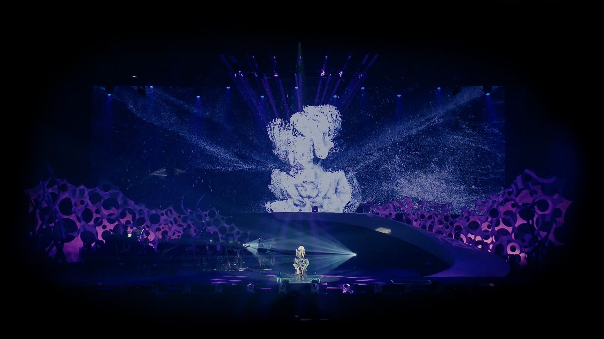
                    <div class="header-title" data-aos="fade-up">
                        <h2>演唱會場景互動視覺</h2>
                    </div>
                </header>
                <main class="project-header-main">
                    <h2 data-aos="fade-down" data-aos-delay="500">
                        華語歌手蔡健雅 2016 的世界巡迴演唱會主題是「列穆尼亞 LEMURIA」。這是一個古文明神話，描述當時的地球豐盛美麗，沒有疾病和暴力。直到災難來襲，列穆尼亞人才進入地心守護地球。而在演唱會中，蔡健雅化身來自宇宙的地心使者，用歌聲撫慰人心，引導人們如何去愛。
                    </h2>
                    <h2 data-aos="fade-down" data-aos-delay="650">
                        而 <a href="https://ultracombos.com/3035952" target="_blank" class="test">此項專案</a> 則是我在 <a href="https://ultracombos.com/" target="_blank" class="test">叁式</a> 實習時參與製作的正式專案。
                    </h2>
                    <figure data-aos="fade-up">
                        <i class="fas fa-angle-down"></i>
                    </figure>
                </main>
            </section> 
        </header>
        <main id="container">
            <section id="project-main-container">
                <section id="main-design-goal">
                    <article>
                        <h3 data-aos="fade-up">Design Goal</h3>
                        <p data-aos="fade-down" data-aos-delay="500">
                            我參與的專案為「異類的同類」這首歌的影像視覺，我與另一名夥伴利用空拍機蒐集空拍機拍攝的實景素材，透過 Photogrammetry 攝影測量技術的軟體，建立龐大的場景，從而透過 Point Cloud 點雲系統合成至演唱會的互動視覺中。
                        </p>
                        <p data-aos="fade-down" data-aos-delay="650">
                            歌手表演時，透過場景的相互變換與舞台前的多個 Kinect 裝置去捕捉歌手全身的型態至虛擬場景中，營造撫慰人心的音樂使者形象。
                        </p>
                    </article>
                    <figure>
                        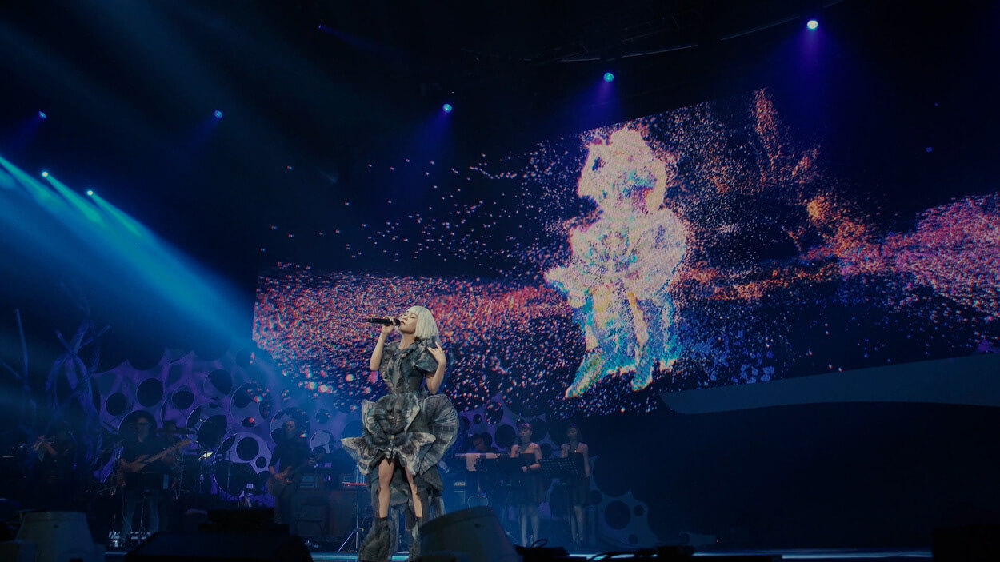
                        <figcaption data-aos="fade-up">最終完成圖</figcaption>
                    </figure>
                </section>
                <section id="main-process-overview">
                    <article>
                        <h3 class="title" data-aos="fade-up">Design Process</h3>
                        <p data-aos="fade-down">
                            為了完成這項任務，我們分成三個階段進行，分別是：收集素材、場景轉換與嵌入至粒子系統。
                        </p>
                    </article>
                    <figure>
                        
                        
                        <figcaption data-aos="fade-up">專案設計流程</figcaption>
                    </figure>
                </section>
                <section id="main-design-process">
                    <div class="collect-container">
                        <article class="collect">
                            <h3 class="title" data-aos="fade-up">Collect｜收集素材</h3>
                            <p data-aos="fade-right" data-aos-delay="500">
                                得知我們要一起參與這個專案，感到十分興奮卻也能感受到時程上的壓力，實際上的工作期程只有兩個月不到的時間可以實作。
                            </p>
                            <p data-aos="fade-right" data-aos-delay="650">
                                首先就是著手收集素材，因此我們到了陽明山的小油坑、擎天崗，新北市金山的不知名工廠廢墟、九份的陰陽海和電廠，甚至遠至離島澎湖，從知名的石滬、七美嶼、西嶼⋯⋯大大小小的島嶼，跋山涉水只為找到適合的場景，能呈現團隊一開始的設定。
                            </p>
                        </article>
                        <figure class="media-collect">
                            <picture>
                                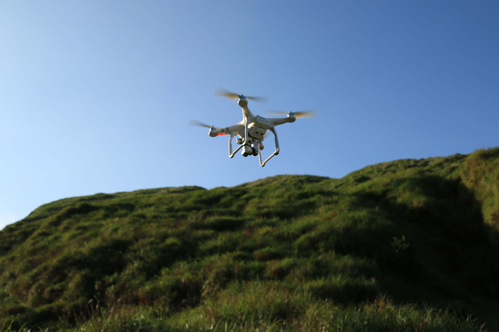
                                 
                                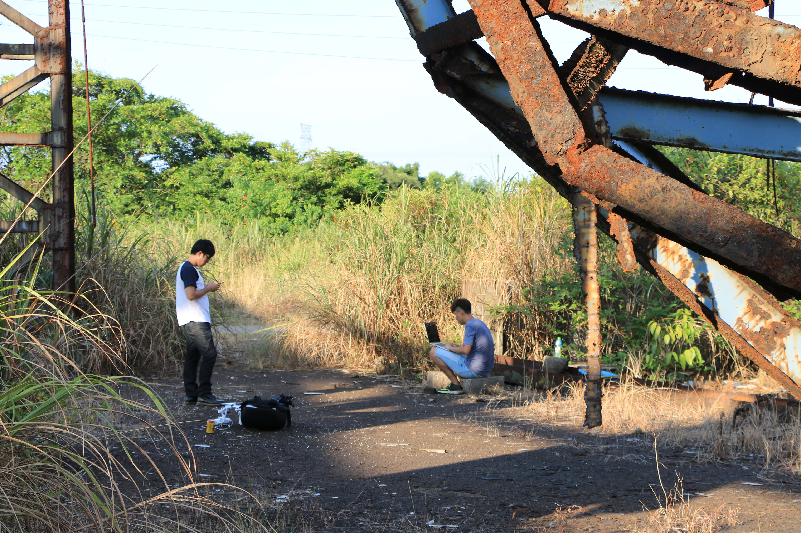
                                <figcaption data-aos="fade-left" data-aos-delay="950">
                                    <i class="fas fa-arrow-circle-up"></i>
                                    <p>
                                        在台北市陽明山與新北市金山山區一處工廠廢墟拍攝場景素材，並現場算圖。
                                    </p>
                                </figcaption>
                            </picture>
                        </figure>
                    </div>
                    <div class="transform-container">
                        <article class="transform">
                            <h3 class="title" data-aos="fade-up">Transform｜場景轉換</h3>
                            <p data-aos="fade-left" data-aos-delay="500">
                                「異類的同類」的腳本場景設計，一開始是從荒原一步步發現人類曾經存在過的痕跡。為了呈現這樣的場景和視覺效果，團隊利用 Photogrammetry 攝影測量術，使用空拍機拍攝素材後，再透過所述之攝影測量技術，輔以軟體建構為 3D 的地景。
                            </p>
                            <p data-aos="fade-left" data-aos-delay="650">
                                由於素材皆是影音檔，我們必須將素材影片中，場景的形狀較為完整、突出的畫面，一格一格截圖下來，再進入利用攝影測量術呈現的 Point Cloud 點雲視覺效果的即時建模程式，Render 算圖出來看看效果是否勻稱、完美。所以光是拍攝期就花了非常多的時間與心力，拍完現場就馬上利用電腦測試。
                            </p>
                            <p data-aos="fade-left" data-aos-delay="800">
                                這份工作困難的是：素材合成後，每一張照片素材還需經過修補與合成，如果沒有一張張的仔細確認，合成之後就可能會有破綻，這樣就無法正常匯出至虛擬場景。
                            </p>
                        </article>
                        <figure class="media-transform">
                            <figure class="video">
                                <video loop autoplay muted defaultMuted playsinline oncontextmenu="return false;" data-aos="zoom-in" data-aos-duration="2000">
                                    <source src="../img/project6/prototype.mp4" type="video/mp4">
                                </video>
                                <figcaption data-aos="fade-up">
                                    此為算圖軟體根據場景素材影格多寡決定算圖時間與場景品質。
                                </figcaption>
                            </figure>
                            <picture class="grid">
                                
                                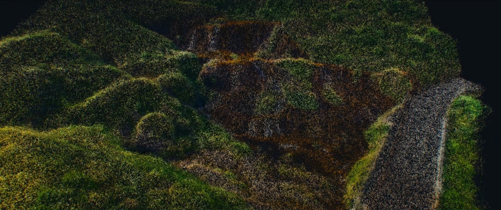
                                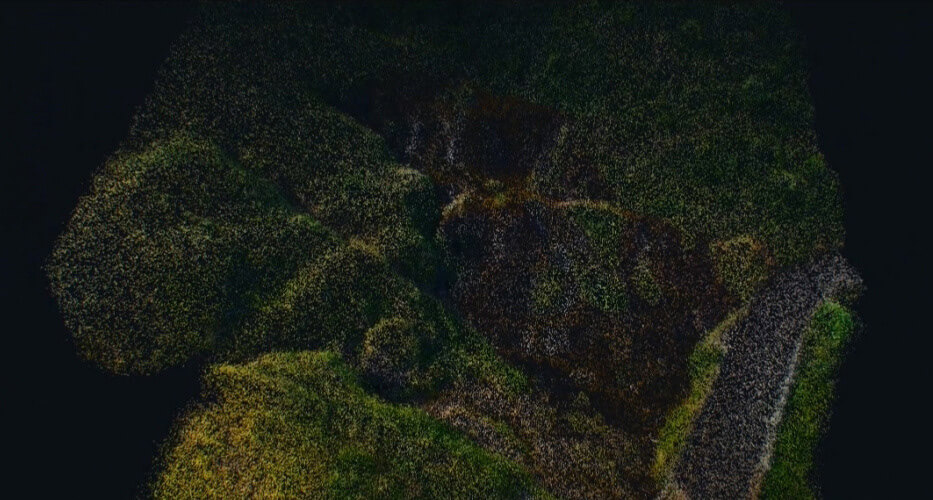
                                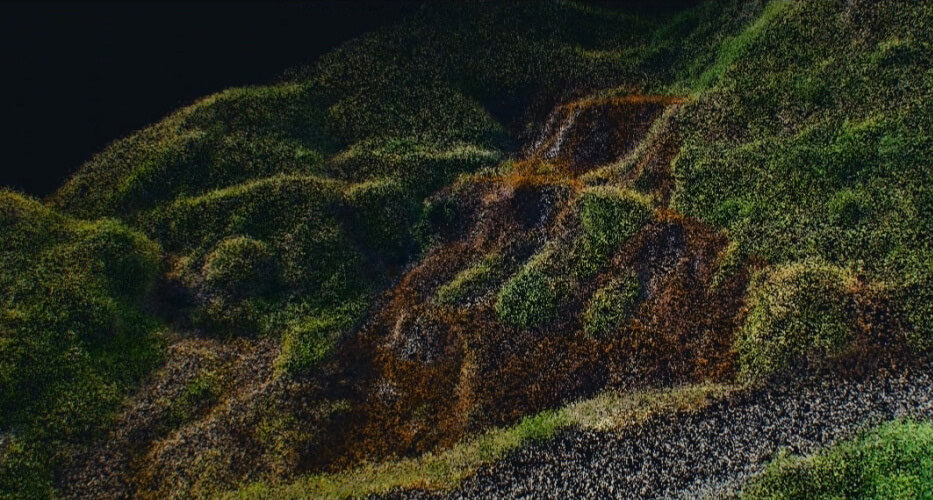
                                
                                
                            </picture>
                        </figure>    
                    </div>
                    <div class="particle-container">
                        <article class="particle-system">
                            <h3 class="title" data-aos="fade-up">Particle System｜粒子系統</h3>
                            <p data-aos="fade-down" data-aos-delay="500">
                                粒子系統 Particle System 由叁式的工程師團隊製作開發，透過上述建立的 3D Point Cloud 點雲視覺化場景匯入至可即時運算的粒子系統，此系統可模擬風速、煙霧和碎形⋯⋯等特效，營造出具動感、神祕感十足的舞台效果。
                            </p>
                            <p data-aos="fade-down" data-aos-delay="650">
                                透過舞台前的 Kinect 裝置，系統能夠立刻取得歌手全身的型態，並進行點雲資訊的視覺化，體現出表演者的動作，將其合成至演唱現場的螢幕。
                            </p>
                            <p data-aos="fade-down" data-aos-delay="800">
                                關於粒子系統的詳細介紹，可<a href="https://ultracombos.com/3035952" target="_blank">按我至叁式官網作品專頁</a>查詢。
                            </p>
                        </article>
                        <figure class="media-particle">
                            <figure class="video">
                                <video loop autoplay muted defaultMuted playsinline oncontextmenu="return false;" data-aos="zoom-in" data-aos-duration="2000">
                                    <source src="../img/project6/particle_prototype.mp4" type="video/mp4">
                                </video>
                                <figcaption data-aos="fade-up">透過 Particle System 合成至點雲虛擬場景中</figcaption>
                            </figure>
                            <!-- <picture class="grid">
                                
                            </picture> -->
                        </figure>    
                    </div>
                </section>
            </section>
        </main>
        <section id="project-main-footer">
            <figure class="main-footer-image" data-aos="fade-up">
                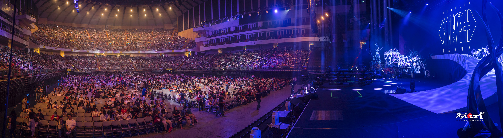
            </figure>
            <article class="thanks">
                <div class="column chi">
                    <h2 data-aos="fade-right" data-aos-delay="500">蔡健雅 2016列穆尼亞演唱會 台北場</h2>
                    <div class="paragraph p1">
                        <p data-aos="fade-right" data-aos-delay="600">主辦單位：<strong>大地風有限公司</strong></p>
                        <p data-aos="fade-right" data-aos-delay="700">藝人經紀：<strong>水晶共振</strong></p>
                        <p data-aos="fade-right" data-aos-delay="800">企劃製作：<strong>天空藍工作室</strong></p>
                        <p data-aos="fade-right" data-aos-delay="900">導演：<strong>張文玲</strong></p>
                        <p data-aos="fade-right" data-aos-delay="1000">演唱：<strong>蔡健雅</strong></p>
                    </div>
                    <div class="paragraph p2">
                        <p data-aos="fade-right" data-aos-delay="1100">互動視覺設計：<strong>叁式有限公司</strong></p>
                        <p data-aos="fade-right" data-aos-delay="1200">製作人：<strong>曾煒傑</strong></p>
                        <p data-aos="fade-right" data-aos-delay="1300">腳本與設計：<strong>李威宗、黃偉哲</strong></p>
                        <p data-aos="fade-right" data-aos-delay="1400">互動系統 / 演算視覺設計：<strong>吳思蔚、陳韋安、楊家豪</strong></p>
                        <p data-aos="fade-right" data-aos-delay="1500">3D 場景： <strong>楊家豪、陳威廷、莊廷烽、王建傑</strong></p>
                        <p data-aos="fade-right" data-aos-delay="1600">系統規劃：<strong>劉偉申</strong></p>
                        <p data-aos="fade-right" data-aos-delay="1700">執行助理：<strong>黃薇如</strong></p>
                        <p data-aos="fade-right" data-aos-delay="1800">影片剪輯：<strong>何庭安</strong></p>
                    </div>
                </div>
                <div class="column eng">
                    <h2 data-aos="fade-left" data-aos-delay="500">Tanya Chua LEMURIA Tour 2016 in Taipei</h2>
                    <div class="paragraph p1">
                        <p data-aos="fade-left" data-aos-delay="600">Concert Promoter: <strong>TERRA BREEZE</strong></p>
                        <p data-aos="fade-left" data-aos-delay="700">Artist Management: <strong>CRYSTAL RESONANCE</strong></p>
                        <p data-aos="fade-left" data-aos-delay="800">Concert Produced by <strong>BLUE SKY PRODUCTION</strong></p>
                        <p data-aos="fade-left" data-aos-delay="900">Director: <strong>Chang, Wen-Ling</strong></p>
                        <p data-aos="fade-left" data-aos-delay="1000">Artist: <strong>Tanya Chua</strong></p>
                    </div>
                    <div class="paragraph p2">
                        <p data-aos="fade-left" data-aos-delay="1100">Interactive Visual Produced by <strong>ULTRA COMBOS</strong></p>
                        <p data-aos="fade-left" data-aos-delay="1200">Producer: <strong>Jay Tseng</strong></p>
                        <p data-aos="fade-left" data-aos-delay="1300">Visual Script & Design: <strong>Lee, Wei-Tsung、Huang, Wei-Jhe</strong></p>
                        <p data-aos="fade-left" data-aos-delay="1400">Interactive System & Generative Visual: <strong>Wu, SzuWei、Chen, WeiAn、Yang, ChiaHao</strong></p>
                        <p data-aos="fade-left" data-aos-delay="1500">3D Scenes: Yang, <strong>ChiaHao、Chen, WeiTing、Chuang, TingFeng、Wang, JianJie</strong></p>
                        <p data-aos="fade-left" data-aos-delay="1600">System Planning: <strong>Liu, WeiShen</strong></p>
                        <p data-aos="fade-left" data-aos-delay="1700">Executive Assistant: <strong>Huang, Weiju</strong></p>
                        <p data-aos="fade-left" data-aos-delay="1800">Film Editing: <strong>Ting-An Ho</strong></p>
                    </div>
                </div>
            </article>
        </section>
        <section id="project-nav">
            <div class="container">
                <header class="title" data-aos="fade-right" data-aos-delay="500" data-aos-duration="1000">
                    <h3 data-aos="fade-right" data-aos-delay="600" data-aos-duration="1500">更多專案 | PROJECT</h3>
                </header>
                <ul class="nav">
                    <li class="prev" data-aos="fade-right" data-aos-delay="500">
                        <a href="../project5/" class="prev">
                            <div class="content prevContent">
                                <h4>PREV | 前個專案</h4>
                                <p>Rolla</p>
                            </div>
                        </a>
                    </li>
                    <li class="next" data-aos="fade-left" data-aos-delay="600">
                        <a href="../project1/" class="next">
                            <div class="content nextContent">
                                <h4>NEXT | 下個專案</h4>
                                <p>BotBonnie 聊天機器人 SaaS 平台</p>
                            </div>
                        </a>
                    </li>
                </ul>
            </div>
        </section>
        <footer id="footer" class="mobile">
            <div class="container">
                <aside class="cta">
                    <div class="column">
                        <span>💎</span>
                    </div>
                    <div class="column">
                        <h3>喜歡我的作品嗎？快與我聯絡！</h3>
                        <h3 class="eng">Let's Connect & Reach out.</h3>
                    </div>
                </aside>
                <aside class="link">
                    <ul class="nav">
                        <li>
                            <a href="mailto:mail@horace.design">
                                <i class="fas fa-paper-plane"></i>
                            </a>
                        </li>
                        <li>
                            <a href="https://www.linkedin.com/in/horacechuang/" target="_blank">
                                <i class="fab fa-linkedin-in"></i>
                            </a>
                        </li>
                        <li>
                            <a href="http://be.net/horacechuang/" target="_blank">
                                <i class="fab fa-behance"></i>
                            </a>
                        </li>
                        <li>
                            <a href="https://dribbble.com/horace_chuang" target="_blank">
                                <i class="fab fa-dribbble"></i>
                            </a>
                        </li>
                    </ul>
                    <span>Made & code with &hearts; by me, all rights reserved.</span>
                </aside>
            </div>
        </footer>
    </div>
    <section id="landscapeContent" class="animate__animated animate__fadeIn">
        <div class="notAllow">
            <p class="animate__animated animate__slideInLeft">為了給您更好的觀看體驗，請您以行動裝置瀏覽時，<br />
            使用 <span>直向</span> 方式瀏覽作品集。</p>
            <p class="animate__animated animate__slideInLeft">
                Hey, we suggest that turn your mobile device to the <span>portrait mode</span> if you need to have the best quality to browse the website.
            </p>
        </div>
    </section>
   <script>
        AOS.init({
             offset: 140,
             duration: 800,
             easing: 'ease',
             once: true,
             mirror: true
         });
 
         window.dataLayer = window.dataLayer || [];
         function gtag(){
             dataLayer.push(arguments);
         }
         gtag('js', new Date());
         gtag('config', 'G-2M9P28SF1T');
 
         var scroll = new SmoothScroll('a[href*="#"]', {
             speed: 500,
             speedAsDuration: true
         });

         (function(d) {
            var config = {
            kitId: 'cge0kgt',
            scriptTimeout: 3000,
            async: true
            },
            h=d.documentElement,t=setTimeout(function(){h.className=h.className.replace(/\bwf-loading\b/g,"")+" wf-inactive";},config.scriptTimeout),tk=d.createElement("script"),f=false,s=d.getElementsByTagName("script")[0],a;h.className+=" wf-loading";tk.src='https://use.typekit.net/'+config.kitId+'.js';tk.async=true;tk.onload=tk.onreadystatechange=function(){a=this.readyState;if(f||a&&a!="complete"&&a!="loaded")return;f=true;clearTimeout(t);try{Typekit.load(config)}catch(e){}};s.parentNode.insertBefore(tk,s)
        })(document);
     </script>
</body>
</html>